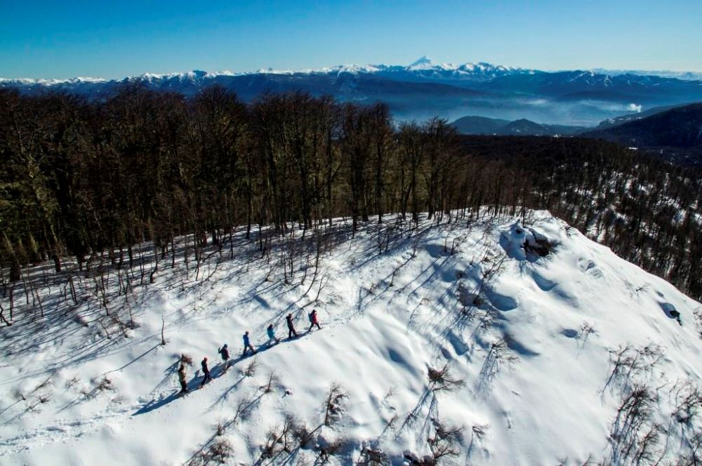
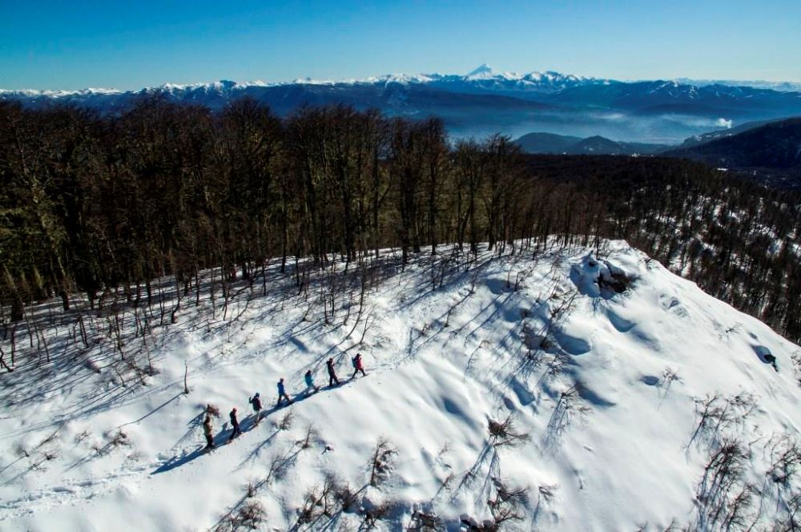

San Martin de los Andes
Ubicada a orillas del lago Lácar y rodeada del Parque Nacional Lanín, la bella San Martín de los Andes posee en las cuatro estaciones del año los atractivos necesarios para que el visitante quiera quedarse para siempre.

Junin de los Andes
Al sudoeste de la Provincia del Neuquén se localiza la ciudad de Junín de los Andes. Es reflejo de nuestra historia, tradición, religión, cultura mapuche; y es la puerta de entrada al Parque Nacional Lanín

Villa la Angostura
Ubicada sobre el noroeste del lago Nahuel Huapi, en el sur de la provincia de Neuquén. Está inmersa en el parque nacional Nahuel Huapi, rodeada de lagos y enmarcada en las principales áreas protegidas de la Patagonia.

Villa Pehuenia - Moquehue
Una auténtica Aldea de montaña enclavada en un anfiteatro de cerros y lagos con playas de arena blanca que se esconden en el bosque patagónico a tan sólo 310 kms de Neuquén capital y a 11 kms de Chile

Villa El Chocon
Esta particular y tranquila villa está ubicada al Este de la provincia del Neuquén, en el departamento Confluencia y dentro de la zona turística denominada “Estepa de los Dinosaurios”


 
